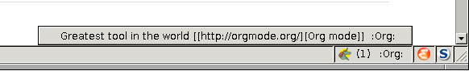
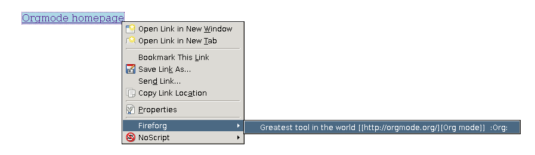

Ongoing Development of Org Additions?
Table of Contents
- Org Collector
- Fireforg, a Firefox extension for org interaction (EXPERIMENTAL)
- MEMO org-mail-htmlize: Create MIME messages based on Org
- Org mode issue tracking library
Some org-mode related project currently being developed in worg.
Org Collector
Located in the contrib/lisp/ directory of org-mode.
A utility for collecting properties from the headers in an org file, running the properties through arbitrary elisp functions, and presenting the results in a table.
The functionality of this tool is similar to the functionality of , but this has support for processing prior to the generation of the table.
Here is a simple example application of this utility.
Fireforg, a Firefox extension for org interaction (EXPERIMENTAL)
Note: The development of org-fireforg has ceased back in 2009
Fireforg is a Firefox extension, that interacts with Emacs Org-mode.
For the displayed URL it shows the associated tags in the status bar and allows to show a list of annotations that can be instantly visited in Emacs.
Additionally, in every website it marks all links that occur in the agenda files.
For every link in the agenda files the previous heading and its tags are associated with it.
For scientific use, it is possible to send BibTeX entries for sites supported by the Zotero plugin to Emacs. are necessary for this to work.
Caveats
The following notes should be taken into consideration before using Fireforg:
- On the Emacs side a registry of all links in the agenda files will
be generated and saved in plain text onto the harddrive.
- The generation can take very a long time depending on the size of the agenda files and the number of links in them.
- The generated file can become quite large.
- When files are encrypted having some information from them in plain text on the harddrive might not be what you want.
- Firefox will read and look through the registry file for the currently viewed site. Depending on the size of the registry file and on the options Lookup links on page load and Prefetch links to extract DOI this might slow down the browsing experience.
Installation
Install org-protocol according to its manual and please verify that it’s working using either the bookmarks or by invoking it directly in the shell:
emacsclient 'org-protocol://remember://w/http%3A%2F%2Forgmode.org%2F/Org-Mode%3A%20Your%20Life%20in%20Plain%20Text%20-%20Mozilla%20Firefox/'
Get org-fireforg.el from and put the following into your
.emacsafter the section that initializes org-protocol:(add-to-list 'load-path "~/path/to/org/fireforg/") (require 'org-fireforg) (org-fireforg-registry-insinuate)
and as the last line of the file:
(org-fireforg-registry-initialize t)
Note that creating the registry can take a long time depending on the size of the agenda files and the number of links in them.
Visit with Firefox, confirm installation of the extension and restart.
(Windows users will have to adjust: org-fireforg-registry-file-xml in Emacs and “registry-file” in Fireforgs preferences to be the same file.)
Installation from a git clone
note: development seems to have ceased back in 2009. Use with caution.
It is also possible to clone the git repository first, using:
git clone https://repo.or.cz/w/org-fireforg.git
, install lisp/org-fireforg.el according to the instructions above
and add a file named fireforg@burtzlaff.de containing the path
to the “fireforg” subdirectory into ~/.mozilla/firefox/<your
profile>/extensions/.
In my setup for example there is a file
~/.mozilla/firefox/4xyx9l73.default/extensions/fireforg@burtzlaff.de
containing
/home/andy/projects/org-fireforg/fireforg
A restart of Firefox is required for this to work.
Basic usage
The status bar entry
If the currently viewed url is found in your agenda files, the number of occurrences together with all associated tags will be shown in the status bar. A left click on the status bar entry will show a list of all headings associated with the currently viewed url. Selecting one of them lets Emacs visit that heading.
For example, this heading in one of your agenda files:
* Greatest tool in the world [[https://orgmode.org/][Org mode]] :Org:
will yield the following when visiting https://orgmode.org/ and left clicking:

Triggering store-link and remember
Right clicking on the status bar entry shows a menu that let’s you trigger org-protocol’s “store-link” and “remember”.
There is an entry for every remember template listed in the .
The entries in the submenu “All tabs” will call remember for every tab in the current window. This option only makes sense if a remember template is used, that stores the note automatically (“%!” in the template string), e.g.:
* %:description \n %:link %!
Mark links that occur in the agenda files in websites
Whenever a site is loaded, Fireforg will alter the style of all links in it, that occur in the agenda files. The tooltip of those links is set to contain the annotations.
This feature can be turned off using an in the preferences dialog. used for marking the link and is also customizable.
Context menu for links
The context menu (accessible by right clicking on a link) has a submenu “Fireforg”, where all annotations for that link are listed:

Import BibTeX using Zotero
Fireforg is able to retrieve BibTex entries for the all sites supported by Zotero. To achieve this the following additional steps are necessary:
- Install Zotero 1.0.10 from the Zotero Website
Set “Inject Zotero” in Fireforg’s preference dialog 1.
*Warning: On restart a small function is injected into Zotero to catch imported entries. The change to the code is minimal and non-permanent. In a worst case scenario Zotero’s database might get corrupted, though that hasn’t happened yet.*
Restart Firefox
Whenever a single entry (not a collection) is imported into Zotero - e.g. by clicking the white “document” symbol that appears to the right in the url bar if Zotero supports importing the current site - it is automatically exported to BibTeX and sent to org mode using org-protocol. In Emacs it is put into the kill ring in a format depending on the variable
org-fireforg-received-bibtex-format:nil: The BibTeX entry is passed directly into the kill ring.heading(Default): A heading is generated with the BibTeX fields as properties with prefix “BIB_”:* [[<link to site>][<Title>]] :PROPERTIES: :CUSTOM_ID: <BibTeX key> :BIB_entryType: <article, ...> :BIB_author: ... :BIB_title: ... ... :END:
headingWithPropsAndBibTeXContent: a heading with properties as described above is generated and the entry in BibTeX format is appended.headingWithBibTeXContent: same as the previous one but without the propertiesIf the ’url’ field is a static URL, the link to it will be highlighted in search results in every search engine. Otherwise the option Match sites by comparing their DOI with saved bibliography entries might help.
To export BibTeX information from all headings in the current buffer with at least the “BIB_entryType” property call:
org-fireforg-export-bibtex-to-fileto export to a fileorg-fireforg-export-bibtex-to-new-bufferto export into a new buffer
Digital Object Identifiers (DOI)
If a BibTeX entry contains a field ’doi’, a URL will be generated by prepending “http://dx.doi.org/” to the corresponding property ’BIB_doi’. It will be handled as any other URL. There is a corresponding functionality in the plugin that allows to associated pages despite non-static URLs.
Preferences
Fireforg’s preference dialogue is accessible in Firefox’s menu under Tools->Add-ons->Fireforg->Preferences
- Registry file
The file containing an xml tree with all link-headline associations generated from the agenda files. You should not need to change this. It has to be same as the customizable variable
org-fireforg-registry-file-xmlin Emacs. - Lookup links on page load
When enabled, all links in a web page that have headlines associated with them are marked. This is achieve by adding the following CSS style string to the element: Depending on the size of the registry this might slow Firefox down.
- CSS style string for links with annotations
The string that is appended to the CSS
stylestring of a link element, if annotations for it exist. - Overwrite tooltip for links with annotations
If enabled, sets the tooltip for the links, for which annotations exist to contain those annotations.
- Inject Zotero
After restarting Firefox, a function in the Zotero code gets altered so that all BibtTeX entries (not collections) that are imported are sent using org-protocol and are handled in Emacs according to the variable
org-fireforg-received-bibtex-formatas described here. Due to design choices in Zotero this is a bit fragile and can yield errors and might possibly even break Zotero’s database. It is not advisable to use Zotero for production when enabling this option in Fireforg. - Match sites by comparing their DOI with saved bibliography entries
Extract the Digital Object Identifier (DOI) from a page, prepend “http://dx.doi.org/” to it and look up the resulting URL.
If using a bibliography format with properties, a URL is generated in the same way from the value of the field “BIB_doi” if it exists. Thus documents can be matched regardless of the possibly non-static URL.
- Prefetch links to extract DOI
Prefetch all links in a page after it is loaded, extract the DOIs - if any - and use it to find annotations. This requires the option Match sites by comparing their DOI with saved bibliography entries to be set.
A site is only prefetched once in every Firefox session, because the associated URL mapping is saved until Firefox is restarted.
All links starting with “http” will be prefetched (except for files with extensions: PDF, GIF, PNG or SWF). This option can also be toggled in the status bar menu.
This option will generate additional network traffic and might slow the browsing experience
- List of characters specifying available remember templates
For every character in this list an entry in the will be generated, that triggers remember with the template associated with the character.
- Enable workaround for Mac
see here
- Temporary file for Mac workaround
see here
Workaround for the inability to register a protocol in Firefox on the Mac
A long known bug in Firefox on the Mac is reported to stop protocol registration from working. To work around this Fireforg is able to write the org-protocol urls to a temporary file, that is read every second and, if non empty, passed to emacsclient and emptied.
To enable this:
- check “Enable workaround for Mac” in Fireforg’s preference dialogue 1
- get pull.sh from https://repo.or.cz/w/org-fireforg.git and run it.
Updating
To avoid confusion, always update both org-fireforg.el and the plugin.
The plugin has to be uninstalled and then reinstalled as described above. Automatic updating will be used when the testing phase is over.
Bugreporting and discussion
- Discussions go to the org-mode list.
- Bugreports are better not sent to the list, but rather directly to the author (Please add “[Fireforg]” to the subject.).
A checklist for bug tracing
To create a test case put:
* Greatest tool in the world [[https://orgmode.org/][Org mode]] :Org:
into one of your agenda files and save it.
If problems arise please go through this checklist to locate the problem:
- Does the file “~/.org-fireforg-registry.xml” exist and does it contain “orgmode.org”?
- No on either: Send me the last content of the Messages buffer in Emacs
- Yes: In the Firefox menu: “Tools”->“Error console” look for errors containing: “chrome://fireforg/” and send them to me.
Technical note
Different instances of Zotero’s Translator object seem to share state in a non-obvious way. This makes coding very fragile and even lets some imports fail (silently) after Fireforg has injected its code. The failure when importing collections is somehow related to this. While I find it a strange design choice, it is not in my power to change it.
MEMO org-mail-htmlize: Create MIME messages based on Org
Representing a MIME internet message
A MIME internet message consists of one or more MIME entities. Each MIME entity is of a distinct type and subtype, has a body and optional MIME headers related to its content.
A MIME entity is represented as a list:
(TYPE SUBTYPE BODY CONT-HEAD)
- TYPE
- Symbol of MIME media type (e.g. text, video, audio).
- SUBTYPE
- Symbol of MIME media subtype (e.g. plain, html).
- BODY
- String with entity body -or- list of other MIME entities.
- CONT-HEAD
- List of cons with content related MIME header fields. The name of the header field without the prefix “Content-” is car, the value cdr.
Example:
'(text html "<h1>Headline</h1>" ((disposition . inline)))
For messages of type multipart the body consists of a list of one or more MIME entities.
'(multipart alternative '((text plain "* Headline") (text html "<h1>headline</h1>")))
MIME delimiters of SEMI and mml
The MIME delimiters are defined in an association list with a symbol of the library’s name as key and delimiter format strings as values. For each library there are three formatstrings.
(SYMBOL DELIM-SINGLE DELIM-SINGLE-CONT DELIM-MULTI)
- DELIM-SINGLE
Denoting a single MIME entity.
Strings are passed in this order:
- type
- subtype
- content header
- body
- DELIM-SINGLE-CONT
Format of content header strings.
Strings are passed in this order:
- header field name
- header field value
- DELIM-MULTI
Enclosing parts of a multipart entity.
Strings are passed in this order:
- subtype
- body
- subtype
(setq org-mail-htmlize-mime-delimiter-alist '((semi "\n--[[%s/%s%s]]\n%s" "\ncontent-%s: %s" "\n--<<%s>>-{\n%s\n--}-<<%s>>") (mml "\n<#part type=\"%s/%s\"%s>\n%s" " %s=\"%s\"" "\n<#multipart type=\"%s\">\n%s\n<#/multipart>")))
Generic function
This generic function returns a string representation with MIME
delimiters depending on the variable org-mail-htmlize-mime-lib.
(setq org-mail-htmlize-mime-lib 'semi)
(defun org-mail-htmlize-mime-entity (type subtype body &optional cont-head) "Return string representation of MIME entity. TYPE is the type of entity body. SUBTYPE is the subtype of body. BODY is the body of the entity. Either a string with the body content or a list with one ore more MIME entities. Optional argument CONT-HEAD is a list of cons with content specific headers, name in car and value in cdr." (let ((delimlst (assoc org-mail-htmlize-mime-lib org-mail-htmlize-mime-delimiter-alist))) (if (eq type 'multipart) (format (nth 3 delimlst) subtype (mapconcat (lambda (b) (apply 'org-mail-htmlize-mime-entity (car b) (cadr b) (cddr b))) body "") subtype) (format (nth 1 delimlst) type subtype (mapconcat (lambda (h) (format (nth 2 delimlst) (car h) (cdr h))) cont-head "") body))))
Open questions
How to handle charset information?
How to attach files?
The generic function expects BODY either be a string or a list. Attaching binary file (image, etc.) requires to encode it so the message will pass the message system. So we might use kind of a encoder (e.g. base64) on our own.
Or, what seems a cleaner solution: Use attachment function of the respective MIME mode. To achive this: Introduce third possibility for BODY: A cons with the filename in car and symbol of the function in cdr.
(FILENAME . FUNCTION)
'(image jpeg ("/path/to/image" . org-mail-htmlize-add-attachment))
The function org-mail-htmlize-add-attachment is called with file
name as argument and calls the appropriate function depending on
org-mail-htmlize-mime-lib and returns a string
- with the encoded body
-or-
- the complete MIME entity
Side effect: The user might be prompted for attachment settings (e.g. encoding). But, on the other hand: We delegate the job of creating the attachment to the library that is responsible for mime.
Quotes from the specs
MIME multipart: Notion of structured, related body parts
-
NOTE: Conspicuously missing from the “multipart” type is a notion of structured, related body parts. It is recommended that those wishing to provide more structured or integrated multipart messaging facilities should define subtypes of multipart that are syntactically identical but define relationships between the various parts. For example, subtypes of multipart could be defined that include a distinguished part which in turn is used to specify the relationships between the other parts, probably referring to them by their Content-ID field. Old implementations will not recognize the new subtype if this approach is used, but will treat it as multipart/mixed and will thus be able to show the user the parts that are recognized.
MIME multipart: order of entities inside a multipart
-
5.1.3. Mixed Subtype
The “mixed” subtype of “multipart” is intended for use when the body parts are independent and need to be bundled in a particular order. Any “multipart” subtypes that an implementation does not recognize must be treated as being of subtype “mixed”.
-
5.1.4. Alternative Subtype
The “multipart/alternative” type is syntactically identical to “multipart/mixed”, but the semantics are different. In particular, each of the body parts is an “alternative” version of the same information.
Systems should recognize that the content of the various parts are interchangeable. Systems should choose the “best” type based on the local environment and references, in some cases even through user interaction. As with “multipart/mixed”, the order of body parts is significant. In this case, the alternatives appear in an order of increasing faithfulness to the original content. In general, the best choice is the LAST part of a type supported by the recipient system’s local environment.
In general, user agents that compose “multipart/alternative” entities must place the body parts in increasing order of preference, that is, with the preferred format last. For fancy text, the sending user agent should put the plainest format first and the richest format last. Receiving user agents should pick and display the last format they are capable of displaying. In the case where one of the alternatives is itself of type “multipart” and contains unrecognized sub-parts, the user agent may choose either to show that alternative, an earlier alternative, or both.
Org mode issue tracking library
A collection of helper functions to maintain the Issue file from within Wanderlust and (partly) Gnus.
You can download a current version of this file here.
Currently following commands are provided:
- ’org-issue-new’
File a new issue for current message
Creates a new TODO in ’org-issue-issue-file’ below the headline “New Issues” with keyword NEW. If customization variable ’org-issue-message-flag’ is non-nil and flagging messages is supported, the message of this issue is flagged.
- ’org-issue-close’
- Close issue of current message.
- ’org-issue-tag’
- Tag issue of current message.
- ’org-issue-update-message-flag’
Update message flag according to issue file.
If the issue for current message is closed, the message flag is removed.
- ’org-issue-link-gmane’
- An Org mode web link pointing to current message on gmane is pushed to killring and clipboard.
Footnotes:
Fireforg’s preference dialogue is accessible in Firefox’s menu under Tools->Add-ons->Fireforg->Preferences